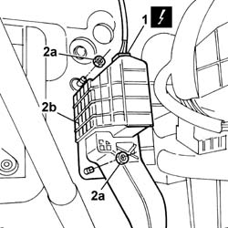

1068A22 ACCELERATOR PEDAL with built in POTENTIOMETER - R.R. for versions with electro-hydraulic selection gearbox
- Path
- Procedures > 10 ENGINE UNIT > 1068 ACCELERATOR CONTROLS > 1068A ACCELERATOR PEDAL CONTROL > 1068A22 ACCELERATOR PEDAL with built in POTENTIOMETER - R.R. for versions with electro-hydraulic selection gearbox
- Kind
- repair procedure (removal / refitting; the operation number is the code)
- Applies to
- engines: 1.2 8v; all production periods
- Interactive page
- https://sloeber94.github.io/elrnDB-fPnd/en/#/2752560
Applies to: engines: 1.2 8v; all production periods
 Removing
Removing
 Refitting
RefittingDisconnect the battery negative terminal.
1. Disconnect the electrical connection for the accelerator pedal potentiometer.
 | Name | Connector |
|---|---|---|
1 | Accelerator pedal potentiometer | K55 |
2. Undo the fixing nuts (2a) and remove the accelerator pedal with potentiometer incorporated (2b).

Applies to: engines: 1.2 8v; all production periods
Refitting
RemovingFit the accelerator pedal in place and tighten the fixing nuts.
Connect the electrical connection for the accelerator pedal potentiometer.
| Name | Connector |
|---|---|---|
- | Accelerator pedal potentiometer | K55 |
Connect the battery negative terminal.